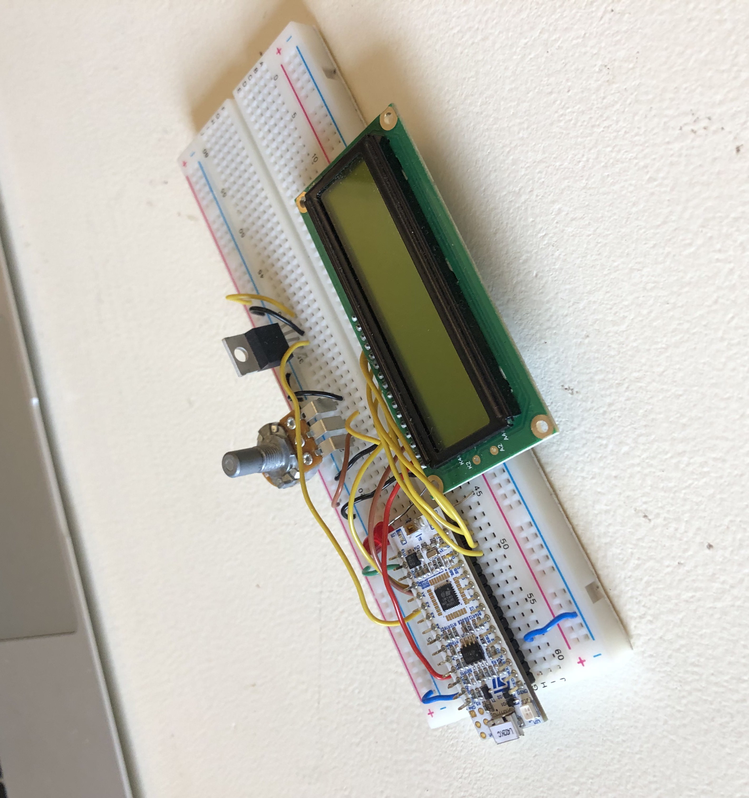
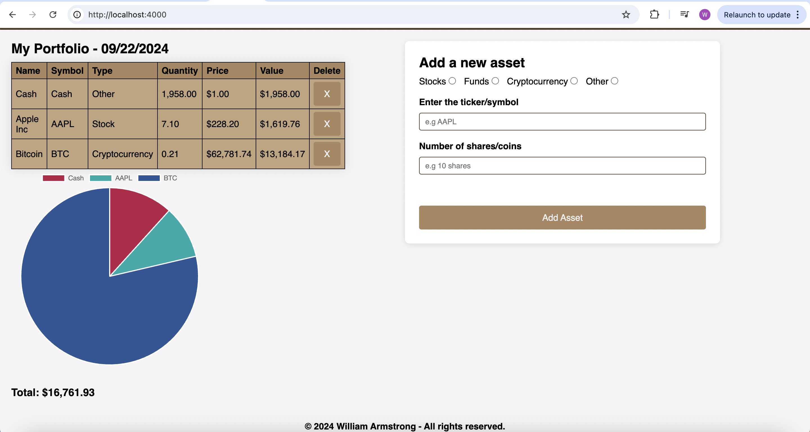
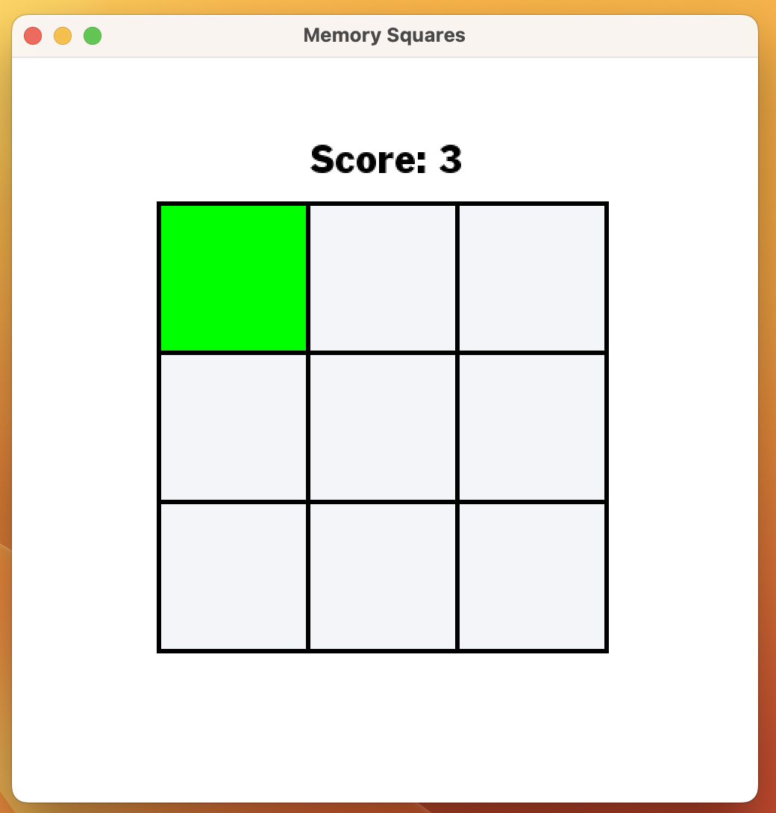

I am a hardworking and enthusiastic 2nd year student studying Electronics and Software Engineering at the University of Glasgow. I have developed a keen interest in exploring low-level computing topics with a particular focus on digital electronics, computer systems, and embedded systems.
In addition to my interest in low-level systems, I have been teaching myself web development, having successfully completed projects that showcase my skills in front-end and full-stack development.

Various projects include writing voltage data to an LCD display, generating pulse width modulated signals, and using a FET to drive an LED strip.
Developed an application allowing users to create a portfolio of stocks, funds and cryptocurrencies using the Alpha Vantage API to fetch real-time stock and cryptocurrency prices. Presents assets in table and pie chart format using Chart.js.


Created an interactive memory game where users recall and input a sequence of squares. I integrated a GUI using the SFML library.
Designed and implemented a personal portfolio website showcasing projects, skills and contact information. Utilised media queries to ensure a fully responsive design, adapting to various screen sizes and devices.